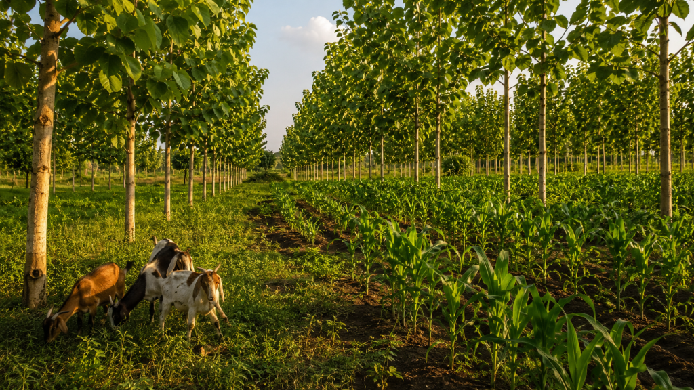

Most Nigerian farmers use one piece of land to do one job. The same land can do three jobs at once, earn three times, and improve itself in the process.
Jubril owns one hectare in Oyo State. For the past four years he has planted maize on it every season, sold at harvest, and started again. The land is working. But it is working the way a person works when they have three skills and only use one. The land is not the problem. The plan is.
One hectare of well-managed Nigerian farmland can produce timber, food crops, and livestock income at the same time, from the same soil, without any of the three activities getting in the way of the others. The key is layering them correctly so each one supports the next rather than competing with it.
Reality Check
A single hectare planted with only one crop earns once per season and sits idle between seasons. The same hectare managed as a layered system earns from timber every few years, food crops every season, and livestock every month. The land does not change. The way it is used does.
The First Layer: Trees for Timber Income
Plant White Teak (Gmelina) in rows across the hectare, spaced three metres apart within each row and ten metres between rows. This spacing leaves enough open ground between the tree rows for crops and animals to move freely while the trees grow. White Teak grows fast and reaches a harvestable size in six to ten years, producing timber the furniture and construction industries actively buy. The trees are not taking land away from the other activities. They are growing quietly in the background while everything else earns in the foreground.
If you want a slower growing but higher value timber option, plant Teak or Iroko at wider spacing alongside the White Teak. These take longer to mature but sell for significantly more per cubic metre when they do. Think of them as a savings account growing quietly behind the current account.
The Second Layer: Food Crops for Seasonal Income
In the first two to three years after planting, before the tree canopy closes overhead, the open ground between the rows gets full sunlight. This is not wasted space. It is a growing window. Plant maize, cassava, or cowpea between the tree rows during this period. The food crops earn income every season while the trees are still young and need very little from the land to keep growing.
Once the canopy begins to close around year three, the food crops move out and the ground beneath the trees becomes shaded grazing land. The system does not lose a layer at this point. It swaps one for another.
The Third Layer: Livestock for Monthly Income
As the tree canopy fills in and provides shade across the hectare, bring in a small number of cattle, goats, or sheep to graze the grass growing between the rows. The shade from the trees reduces heat stress on the animals, which means they eat better, grow faster, and produce more. The animals return the favour by depositing manure around the tree roots, feeding the soil that feeds the trees. Each layer is helping the others without being asked to.
Livestock produce income every month through meat, milk, or sales, which means the overall system is earning continuously rather than waiting for a single annual harvest to bring money in.
Reality Check
The three layers work because they occupy different parts of the same space and different points in the same time. The trees use the upper space and the long term. The crops use the ground level and the short term. The livestock use the shade and the middle term. Nothing competes because nothing is asking for the same thing at the same time.
Jubril’s one hectare has been doing one job for four years. The soil is slightly more tired than it was when he started. The income is the same every season regardless of how hard the season was. And there is nothing growing on his land that will be worth more next year than it is today.
That does not have to be the next four years.
One hectare. Three layers. The land does not need to be bigger. It needs to be used better.